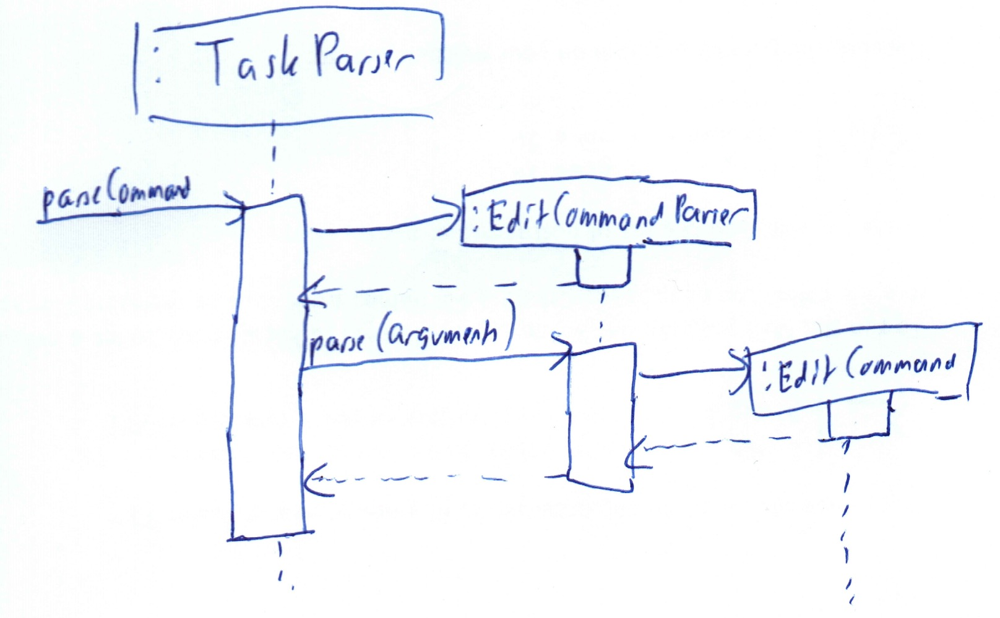
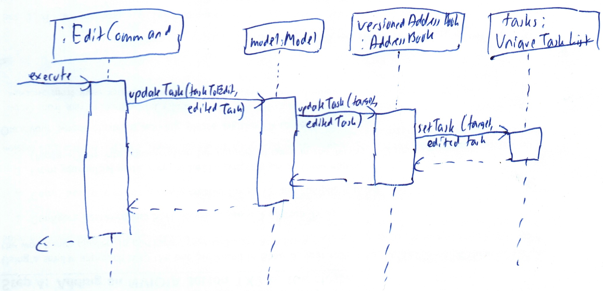

Overview
Cow is a task management app with an emphasis on Command Line Interface ("CLI") interaction. It is written in Java, and its Graphical User Interface ("GUI") is created with JavaFX. It has approximately 10k LoC.
Summary of contributions
-
Major enhancement: added the ability to edit, delete and batch delete tasks
-
What it does: allows the user to change tasks as well as delete more than one tasks at a time
-
Justification: This feature improves the product significantly because sometimes user may add duplicate tasks or add tasks with wrong details. Moreover, sometimes a user may need to delete more than one tasks at a time. Instead of doing it one-by-one which is time consuming, they can do it in one command instead.
-
Highlights: This enhancement was built such that the syntax is the same as the ones for contacts. Moreover, the batch delete tasks syntax is also built on top of the original single delete command. Efforts were taken to ensure that code duplication remains minimum between delete and batch delete.
-
-
Minor enhancement: added a history command that allows the user to navigate to previous commands using up/down keys.
-
Code contributed: TBC
-
Other contributions:
-
Enhancements to existing features:
-
Documentation:
-
Community:
-
Tools:
-
Integrated a new GitHub plugin (coveralls) to the project to track test coverage (#50)
-
-
{you can add/remove categories in the list above}
Contributions to the User Guide
Given below are sections I contributed to the User Guide. They showcase my ability to write documentation targeting end-users. |
Delete all tasks: tasks delete all
Deletes all tasks that are shown in the displayed task list.
Format: tasks delete all
If you accidentally deleted all tasks in the displayed task list, use undo to
recover deleted tasks.
|
Contributions to the Developer Guide
Given below are sections I contributed to the Developer Guide. They showcase my ability to write technical documentation and the technical depth of my contributions to the project. |
Editing and Deleting Tasks
The code for editing and deleting tasks is actually pretty similar to how it is implemented for persons. This is a combination of adding support for two additional commands: tasks edit and tasks delete inside TasksParser, defining EditCommand and DeleteCommand themselves, and finally, adding void updateTask(Task target, Task editedTask); and void deleteTask(Task target); in the Model interface, and implementing them in the ModelManager class.
After any task is updated/deleted, indicateAddressBookChanged() is called to fire off the event such that the UI is updated.
To explain more clearly, you can see below a diagram of what happens when the user asked the program to edit a task:


Batch delete tasks
MSS
-
User requests to list tasks
-
Cow shows a list of tasks
-
User requests to delete a number or all tasks in the list
-
Cow deletes the specified tasks
Use case ends
Extensions
-
2a. The list is empty.
use case ends
-
3a. Any of the given indices is invalid.
-
3a1. Cow shows an error message. Use case resumes at step 2
-